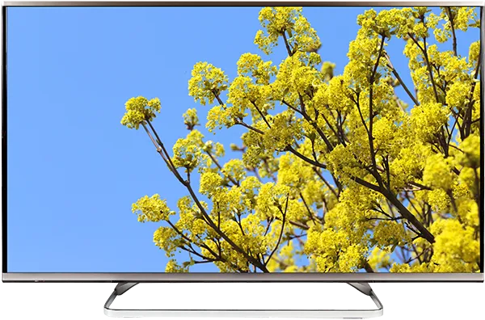

Пять мифов о вреде бытовой техники
Разбираемся, что вымысел, а что — правда
Несмотря на распространенное убеждение, микроволновки не излучают радиацию и не вызывают рак. Это очередной миф о вреде бытовой техники.
Но некоторые опасения близки к правде: например, индукционная плита может плохо влиять на нервную систему и повышать утомляемость.
Собрали пять мифов о негативном влиянии бытовой техники на здоровье и разобрались, что из этого правда.
Микроволновки вызывают рак
Это правда? Нет.
Как на самом деле. Подобный миф мог появиться из-за того, что многие слышали про рак, вызванный радиацией, из-за событий вроде ядерных аварий. Однако излучение бывает разным: например, свет от солнца или тепло, исходящее от нашего тела. Некоторые виды излучения действительно вызывают рак — но только ионизирующие.
Вид излучения зависит от его частоты: спектр варьируется от крайне низких частот — например, от линий электропередач — до крайне высоких. Ионизирующее излучение на высоких частотах — рентгеновские, гамма-лучи и некоторые виды ультрафиолетового излучения — обладает достаточной энергией, чтобы выбить электрон из атома, то есть ионизировать. Это может навредить ДНК и привести к развитию злокачественных опухолей.
Микроволновки излучают микроволны, которые относятся к радиочастотному излучению. Оно находится в низкочастотной части спектра и не обладает достаточной энергией, чтобы ионизировать атомы. Микроволн хватает только на то, чтобы заставить молекулы воды колебаться, создавая тем самым тепло. Поэтому единственный вред, который может нанести человеку микроволновка при несоблюдении инструкций — это ожог.
Существуют опасения, что неионизирующее излучение может воздействовать на клетки как-то иначе и привести к раку, но убедительных доказательств этому нет. И даже в таком случае печи сконструированы таким образом, что микроволны изолированы в самой печи. Они излучаются только при закрытой дверце и включенном устройстве.
За безопасностью устройств следят и регуляторы: например, в США федеральные стандарты ограничивают количество радиочастотного излучения, которое может исходить от микроволновой печи до уровня намного ниже того, который способен нанести вред здоровью человека.
Электромагнитное поле от индукционной плиты вредит здоровью
Это правда? По большей части нет.
Как на самом деле. Индукционные варочные панели — это большие электромагниты. Под ними находятся катушки медной проволоки, которые становятся магнитными, когда через них пропускают ток.
Излучение от индукционной плиты тоже неионизирующее и в электромагнитном спектре находится даже ниже микроволновок. Но в отличие от микроволновок излучение от плиты не остается внутри камеры, а распространяется вокруг панели.
Однако уже на расстоянии 30 см от поверхности плиты уровень электромагнитного излучения равен нулю. Но если неправильно использовать посуду — например, ставить на плиту емкости без специального ферромагнитного слоя на дне или смещать посуду относительно центра конфорки — то уровень излучения повышается. Людям с кардиостимуляторами и вовсе лучше не пользоваться такими плитами — электромагнитные поля могут нарушать нормальную работу устройства.
Нет убедительных доказательств того, что среднечастотные магнитные поля, которые излучает индукционная плита, оказывают долгосрочное воздействие на здоровье, утверждает Всемирная организация здравоохранения.
Теоретически это возможно, но важно учитывать интенсивность излучения и продолжительность воздействия. Например, стоять очень близко — до 30 см — к плите два часа подряд не рекомендуется. Магнитное поле от варочной панели приводит к возникновению электрических токов, проходящих через тело человека. Потенциально они могут вызывать нервное или мышечное возбуждение, что повысит утомляемость, подверженность стрессам и депрессии.
Чтобы избежать вредного воздействия на человека, токи не должны превышать максимальных значений, установленных Международной комиссией по защите от неионизирующих излучений (ICNIRP). Эти требования должны соблюдать производители техники, а регуляторы в разных странах берут их за основу для местных законов.
Электрочайник при кипячении выделяет в воду вредные вещества
Это правда? Уже нет.
Как на самом деле. Чаще всего это миф, но бывают исключения. Ученые не раз изучали выделение никеля, хрома, свинца и других веществ при кипячении воды в разных моделях электрочайников. В большинстве случаев они не нашли в воде ничего вредного, однако некоторые модели с открытым нагревательным элементом выделяли никель.
Это опасно для потребителей, страдающих контактной аллергией на никель — концентрация металла в воде выше определенной нормы может вызвать кожную реакцию.
Со временем производители начали отказываться от открытых элементов. Роскачество проводило исследование электрических чайников в 2019 году. Все 30 моделей, изученных ведомством, не выделяли ни бор, ни хром, ни свинец, ни даже никель.
Однако в 9 из 30 случаев эксперты обнаружили в воде формальдегид после кипячения: в трех случаях после каждого следующего кипячения вода ухудшила свои показатели. Поэтому воду в чайнике лучше кипятить один раз, а затем вылить и налить свежую.
Если корпус чайника изготовлен из качественного материала, никаких вредных веществ опасаться не стоит. Стекло считается самым экологически чистым материалом для чайника, так как не вступает ни в какие химические реакции.

Просмотр телевизора портит зрение
Это правда? Не совсем.
Как на самом деле. Это утверждение ближе к мифу, чем к правде — но тоже не без исключений. Опасаться телевизоров стали еще в 1960-х годах, когда компания General Electric продала несколько новомодных цветных телевизоров. Они излучали очень много радиации — в 100 тысяч раз больше, чем считали безопасным регуляторы. GE быстро отозвала и отремонтировала неисправные телевизоры, но это клеймо на телевизорах сохраняется до сих пор.
Считается, что телевизор безопасен для зрения — доказательств обратного нет. Сам по себе экран не наносит физического вреда зрению независимо от расстояния, но при длительном просмотре без движения могут возникнуть головные боли и усталость глаз. Избежать этого легко — достаточно часто моргать и иногда отводить взгляд.
Близко к экрану часто сидят дети — это не приводит к близорукости. Они могут фокусироваться на близком расстоянии без напряжения глаз лучше, чем взрослые.
В марте 2021 года исследователи из Университета Окаяма опубликовали в японском журнале офтальмологии отчет на основе опроса родителей, дети которых в возрасте от 1,5 до 2,5 года смотрели телевизор вместо игр.
Ученые обнаружили, что у детей, много смотревших телевизор в ранние годы, в возрасте от 7 до 12 лет зрение снижалось чаще, чем у их сверстников. Но прямой связи между проблемами со зрением и телеэкраном не установили. Скорее всего, близорукость связана не с просмотром телевизора, а с недостатком ультрафиолета, который дети получают, гуляя на улице. Он важен для здорового развития глаз.
Кондиционер распространяет бактерии и споры плесени
Это правда? Да.
Как на самом деле. Влажная среда в сплит-системе действительно благотворно влияет на размножение бактерий. Из-за конденсации внутри кондиционера могут появляться биопленки, которые через систему распространяют бактерии в воздух.
Хотя в современных кондиционерах вода выводится с помощью дренажа на улицу, в некоторых старых кондиционерах встроены конденсационные баки, где собирается конденсат и долгое время хранится там.
Из-за этих загрязнителей в квартире повышается риск возникновения кашля, аллергии и астмы. Кроме того, кондиционеры сушат воздух, что способствует передаче вирусов воздушно-капельным путем. Поэтому важно очищать кондиционер вовремя: в бытовом использовании они годами функционируют без соответствующего технологического ухода, очистки и дезинфекции.